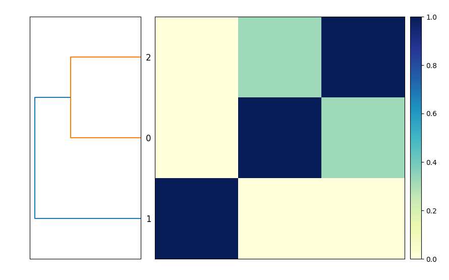
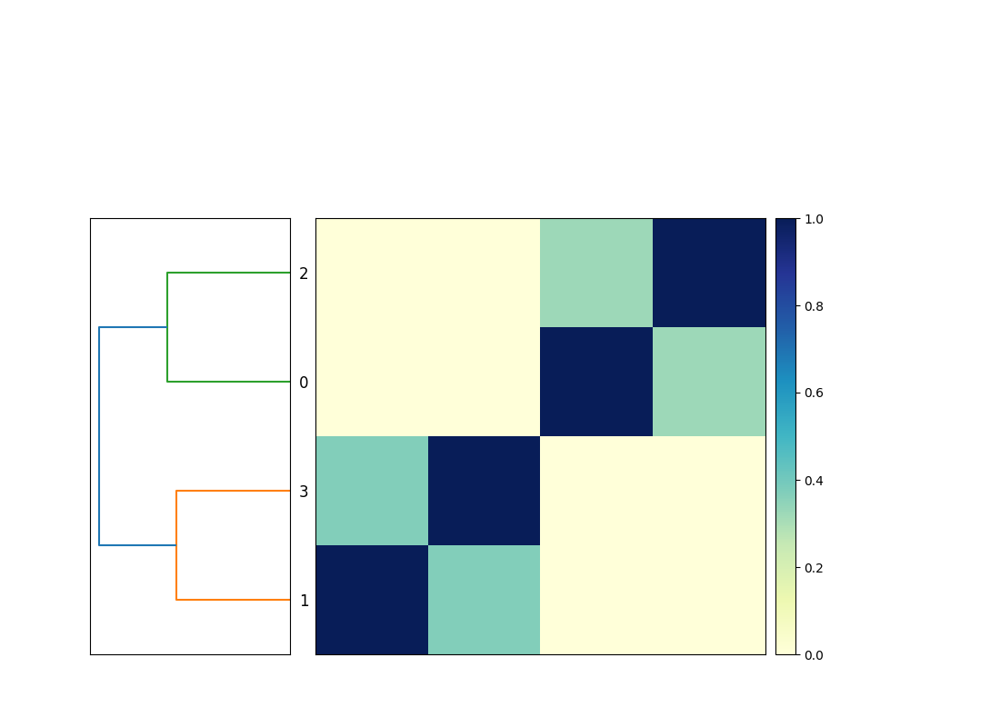

Introduction
Hello! And welcome to this (draft) book! This is very much a work in progress. Please watch the github repository for updates and releases.
Copyright, License, and Reuse
This work is Copyright (C) 2023 by C. Titus Brown and other contributors.
You may copy, modify, and redistribute it as below.

DRAFT: An Introduction to Snakemake for Bioinformatics by C. Titus Brown et al. is licensed under a Creative Commons Attribution-ShareAlike 4.0 International License.
Based on a work at https://github.com/ngs-docs/2023-snakemake-book-draft.
Installation and setup!
Setup and installation
I suggest working in a new directory.
You'll need to install snakemake and sourmash. We suggest using mamba, via miniforge/mambaforge, for this.
Getting the data:
You'll need to download these three files:
- GCF_000021665.1_ASM2166v1_genomic.fna.gz
- GCF_000017325.1_ASM1732v1_genomic.fna.gz
- GCF_000020225.1_ASM2022v1_genomic.fna.gz
and rename them so that they are in a subdirectory genomes/ with the names:
GCF_000017325.1.fna.gz
GCF_000020225.1.fna.gz
GCF_000021665.1.fna.gz
Note, you can download saved copies of them here, with the right names: osf.io/2g4dm/.
Chapter 1 - snakemake runs programs for you!
Bioinformatics often involves running many different programs to characterize and reduce sequencing data, and I use snakemake to help me do that.
A first, simple snakemake workflow
Here's a simple, useful snakemake workflow:
rule compare_genomes:
message: "compare all input genomes using sourmash"
shell: """
sourmash sketch dna -p k=31 genomes/*.fna.gz --name-from-first
sourmash compare GCF_000021665.1.fna.gz.sig \
GCF_000017325.1.fna.gz.sig GCF_000020225.1.fna.gz.sig \
-o compare.mat
sourmash plot compare.mat
"""
Put it in a file called Snakefile, and run it with snakemake -j 1.
This will produce the output file compare.mat.matrix.png which contains a similarity matrix and a dendrogram of the three genomes (see Figure 1).

This is functionally equivalent to putting these three commands into a file compare-genomes.sh and running it with bash compare-genomes.sh -
sourmash sketch dna -p k=31 genomes/*.fna.gz --name-from-first
sourmash compare GCF_000021665.1.fna.gz.sig \
GCF_000017325.1.fna.gz.sig GCF_000020225.1.fna.gz.sig \
-o compare.mat
sourmash plot compare.mat
The snakemake version is already a little bit nicer because it will give you encouragement when the commands run successfully (with nice green text saying "1 of 1 steps (100%) done"!) and if the commands fail you'll get red text alerting you to that, too.
But! We can further improve the snakemake version over the shell script version!
Avoiding unnecessary rerunning of commands: a second snakemake workflow
The commands will run every time you invoke snakemake with snakemake -j 1. But most of the time you don't need to rerun them because you've already got the output files you wanted!
How do you get snakemake to avoid rerunning rules?
We can do that by telling snakemake what we expect the output to be by adding an output: block in front of the shell block:
rule compare_genomes:
message: "compare all input genomes using sourmash"
+ output:
+ "compare.mat.matrix.png"
shell: """
sourmash sketch dna -p k=31 genomes/*.fna.gz --name-from-first
and now when we run snakemake -j 1 once, it will run the commands; but when we run it again, it will say, "Nothing to be done (all requested files are present and up to date)."
The code example above looks a little odd - it's got '+' in front of a two lines, and they're colored green. What gives?
This is an example of a "diff", a line-by-line comparison of two
source code files produced by the diff program. Here, the diff
shows that we've added two lines to the original code listing - the two
lines beginning with '+'. It also adds some context above and below the
added lines so that you can more easily see where they are added to the
original code.
Below, we'll also show examples using removed lines, which will be identified with a '-' in the first position and highlighted in red.
This is because the desired output file, compare.mat.matrix.png, already exists. So snakemake knows it doesn't need to do anything!
If you remove compare.mat.matrix.png and run snakemake -j 1 again, snakemake will happily make the files again:
$ rm compare.mat.matrix.png
$ snakemake -j 1
So snakemake makes it easy to avoid re-running a set of commands if it has already produced the files you wanted. This is one of the best reasons to use a workflow system like snakemake for running bioinformatics workflows; shell scripts don't automatically avoid re-running commands.
Running only the commands you need to run
The last Snakefile above has three commands in it, but if you remove the compare.mat.matrix.png file you only need to run the last command again - the files created by the first two commands already exist and don't need to be recreated. However, snakemake doesn't know that - it treats the entire rule as one rule, and doesn't look into the shell command to work out what it doesn't need to run.
If we want to avoid re-creating the files that already exist, we need to make the Snakefile a little bit more complicated.
First, let's break out the commands into three separate rules.
rule sketch_genomes:
shell: """
sourmash sketch dna -p k=31 genomes/*.fna.gz --name-from-first
"""
rule compare_genomes:
shell: """
sourmash compare GCF_000021665.1.fna.gz.sig \
GCF_000017325.1.fna.gz.sig GCF_000020225.1.fna.gz.sig \
-o compare.mat
"""
rule plot_comparison:
message: "compare all input genomes using sourmash"
output:
"compare.mat.matrix.png"
shell: """
sourmash plot compare.mat
"""
We didn't do anything too complicated here - we made two new rule blocks, with their own names, and split the shell commands up so that each shell command has its own rule block.
You can tell snakemake to run all three:
snakemake -j 1 sketch_genomes compare_genomes plot_comparison
and it will successfully run them all!
However, we're back to snakemake running some of the commands every time - it won't run plot_comparison every time, because compare.mat.matrix.png exists, but it will run sketch_genomes and compare_genomes repeatedly.
How do we fix this?
Adding output blocks to each rule
If add output blocks to each rule, then snakemake will only run rules where the output needs to be updated (e.g. because it doesn't exist).
Let's do that:
rule sketch_genomes:
output:
"GCF_000017325.1.fna.gz.sig",
"GCF_000020225.1.fna.gz.sig",
"GCF_000021665.1.fna.gz.sig"
shell: """
sourmash sketch dna -p k=31 genomes/*.fna.gz --name-from-first
"""
rule compare_genomes:
output:
"compare.mat"
shell: """
sourmash compare GCF_000021665.1.fna.gz.sig \
GCF_000017325.1.fna.gz.sig GCF_000020225.1.fna.gz.sig \
-o compare.mat
"""
rule plot_comparison:
message: "compare all input genomes using sourmash"
output:
"compare.mat.matrix.png"
shell: """
sourmash plot compare.mat
"""
and now
snakemake -j 1 sketch_genomes compare_genomes plot_comparison
will run each command only once, as long as the output files are still there. Huzzah!
But we still have to specify the names of all three rules, in the right order, to run this. That's annoying! Let's fix that next.
Chapter 2 - snakemake connects rules for you!
Chaining rules with input: blocks
We can get snakemake to automatically connect rules by providing information about the input files a rule needs. Then, if you ask snakemake to run a rule that requires certain inputs, it will automatically figure out which rules produce those inputs as their output, and automatically run them.
Let's add input information to the plot_comparison and compare_genomes
rules:
rule sketch_genomes:
output:
"GCF_000017325.1.fna.gz.sig",
"GCF_000020225.1.fna.gz.sig",
"GCF_000021665.1.fna.gz.sig"
shell: """
sourmash sketch dna -p k=31 genomes/*.fna.gz --name-from-first
"""
rule compare_genomes:
input:
"GCF_000017325.1.fna.gz.sig",
"GCF_000020225.1.fna.gz.sig",
"GCF_000021665.1.fna.gz.sig"
output:
"compare.mat"
shell: """
sourmash compare GCF_000021665.1.fna.gz.sig \
GCF_000017325.1.fna.gz.sig GCF_000020225.1.fna.gz.sig \
-o compare.mat
"""
rule plot_comparison:
message: "compare all input genomes using sourmash"
input:
"compare.mat"
output:
"compare.mat.matrix.png"
shell: """
sourmash plot compare.mat
"""
Now you can just ask snakemake to run the last rule:
snakemake -j 1 plot_comparison
and snakemake will run the other rules only if those input files don't exist and need to be created.
Taking a step back
The Snakefile is now a lot longer, but it's not too much more complicated - what we've done is split the shell commands up into separate rules and annotated each rule with information about what file it produces (the output), and what files it requires in order to run (the input).
This has the advantage of making it so you don't need to rerun commands unnecessarily. This is only a small advantage with our current workflow, because sourmash is pretty fast. But if each step takes an hour to run, avoiding unnecessary steps can make your work go much faster!
And, as you'll see later, these rules are reusable building blocks that can be incorporated into workflows that each produce different files. So there are other good reasons to break shell commands out into individual rules!
Chapter 3 - snakemake helps you avoid redundancy!
Avoiding repeated filenames by using {input} and {output}
If you look at the previous Snakefile, you'll see a few repeated filenames - in particular, rule compare_genomes has three filenames in the input block and then repeats them in the shell block, and compare.mat is repeated several times in both compare_genomes and plot_genomes.
We can tell snakemake to reuse filenames by using {input} and {output}. The { and } tell snakemake to interpret these not as literal strings but as template variables that should be replaced with the value of input and output.
Let's give it a try!
rule sketch_genomes:
output:
"GCF_000017325.1.fna.gz.sig",
"GCF_000020225.1.fna.gz.sig",
"GCF_000021665.1.fna.gz.sig"
shell: """
sourmash sketch dna -p k=31 genomes/*.fna.gz --name-from-first
"""
rule compare_genomes:
input:
"GCF_000017325.1.fna.gz.sig",
"GCF_000020225.1.fna.gz.sig",
"GCF_000021665.1.fna.gz.sig"
output:
"compare.mat"
shell: """
sourmash compare {input} -o {output}
"""
rule plot_comparison:
message: "compare all input genomes using sourmash"
input:
"compare.mat"
output:
"compare.mat.matrix.png"
shell: """
sourmash plot {input}
"""
This approach not only involves less typing in the first place, but also makes it so that you only have to edit filenames in one place. This avoids mistakes caused by adding or changing filenames in one place and not another place - a mistake I've made plenty of times!
snakemake makes it easy to rerun workflows!
It is common to want to rerun an entire workflow from scratch, to make sure that you're using the latest data files and software. Snakemake makes this easy!
You can ask snakemake to clean up all the files that it knows how to generate - and only those files:
snakemake -j 1 plot_comparison --delete-all-output
which can then be followed by asking snakemake to regenerate the results:
snakemake -j 1 plot_comparison
snakemake will alert you to missing files if it can't make them!
Suppose you add a new file that does not exist to compare_genomes:
rule sketch_genomes:
output:
"GCF_000017325.1.fna.gz.sig",
"GCF_000020225.1.fna.gz.sig",
"GCF_000021665.1.fna.gz.sig"
shell: """
sourmash sketch dna -p k=31 genomes/*.fna.gz --name-from-first
"""
rule compare_genomes:
input:
"GCF_000017325.1.fna.gz.sig",
"GCF_000020225.1.fna.gz.sig",
"GCF_000021665.1.fna.gz.sig",
"does-not-exist.sig"
output:
"compare.mat"
shell: """
sourmash compare {input} GCF_000021665.1.sig -o {output}
"""
rule plot_comparison:
message: "compare all input genomes using sourmash"
input:
"compare.mat"
output:
"compare.mat.matrix.png"
shell: """
sourmash plot {input}
"""
Here, does-not-exist.sig doesn't exist, and we haven't given snakemake a rule to make it, either. What will snakemake do??
It will complain, loudly and clearly! And it will do so before running anything.
First, let's force the rule remove the output file that depends on the
rm compare.mat
and then run snakemake -j 1. You should see:
Missing input files for rule compare_genomes:
output: compare.mat
affected files:
does-not-exist.sig
This is exactly what you want - a clear indication of what is missing before your workflow runs.
Next steps
We've introduced basic snakemake workflows, which give you a simple way to run shell commands in the right order. snakemake already offers a few nice improvements over running the shell commands by yourself or in a shell script -
- it doesn't run shell commands if you already have all the files you need
- it lets you avoid typing the same filenames over and over again
- it gives simple, clear errors when something fails
While this functionality is nice, there are many more things we can do to improve the efficiency of our bioinformatics!
In the next section, we'll explore
- writing more generic rules using wildcards;
- typing fewer filenames by using more templates;
- providing a list of default output files to produce;
- running commands in parallel on a single computer
- loading lists of filenames from spreadsheets
- configuring workflows with input files
Section 2 - Building an even more useful Snakefile
In Section 2, we'll explore a number of important features of snakemake. Together with Section 1, this section covers the core set of snakemake functionality that you need to know in order to effectively leverage snakemake.
After this section, you'll be well positioned to write a few workflows of your own, and then you can come back and explore more advanced features as you need them.
@ add a summary of where we got to previously
Chapter 4 - running rules in parallel
Let's take a look at the sketch_genomes rule from the last
Snakefile entry:
(@CTB note: Section 1 should be modified to have these explicit filenames in there!)
rule sketch_genomes:
output:
"GCF_000017325.1.fna.gz.sig",
"GCF_000020225.1.fna.gz.sig",
"GCF_000021665.1.fna.gz.sig"
shell: """
sourmash sketch dna -p k=31 genomes/*.fna.gz --name-from-first
"""
rule compare_genomes:
input:
"GCF_000017325.1.fna.gz.sig",
"GCF_000020225.1.fna.gz.sig",
"GCF_000021665.1.fna.gz.sig"
output:
"compare.mat"
shell: """
sourmash compare {input} -o {output}
"""
rule plot_comparison:
message: "compare all input genomes using sourmash"
input:
"compare.mat"
output:
"compare.mat.matrix.png"
shell: """
sourmash plot {input}
"""
This command works fine as it is, but it is slightly awkward - because, bioinformatics being bioinformatics, we are likely to want to add more genomes into the comparison at some point, and right now each additional genome is going to have to be added to both input and output. It's not a lot of work, but it's unnecessary.
Moreover, if add in a lot of genomes, then this step could quickly
become a bottleneck. sourmash sketch may run quickly on 10 or 20 genomes,
but it will slow down if you give it 100 or 1000! (In fact, sourmash sketch
will actually take 100 times longer on 100 genomes than on 1.) Is there
a way to speed that up?
Yes - we can write a rule that can be run for each genome, and then ask snakemake to run it in parallel for us!
Note: sometimes you have to have a single rule that deals with all of
the genomes - for example, compare_genomes has to compare all the
genomes, and there's no simple way around that. But with sketch_genomes,
we do have a simple option!
Let's start by breaking this one rule into three separate rules:
rule sketch_genomes_1:
input:
"genomes/GCF_000017325.1.fna.gz",
output:
"GCF_000017325.1.fna.gz.sig",
shell: """
sourmash sketch dna -p k=31 {input} \
--name-from-first
"""
rule sketch_genomes_2:
input:
"genomes/GCF_000020225.1.fna.gz",
output:
"GCF_000020225.1.fna.gz.sig",
shell: """
sourmash sketch dna -p k=31 {input} \
--name-from-first
"""
rule sketch_genomes_3:
input:
"genomes/GCF_000021665.1.fna.gz",
output:
"GCF_000021665.1.fna.gz.sig"
shell: """
sourmash sketch dna -p k=31 {input} \
--name-from-first
"""
rule compare_genomes:
input:
"GCF_000017325.1.fna.gz.sig",
"GCF_000020225.1.fna.gz.sig",
"GCF_000021665.1.fna.gz.sig"
output:
"compare.mat"
shell: """
sourmash compare {input} -o {output}
"""
rule plot_comparison:
message: "compare all input genomes using sourmash"
input:
"compare.mat"
output:
"compare.mat.matrix.png"
shell: """
sourmash plot {input}
"""
@CTB only include certain lines
It's wordy, but it will work - run:
snakemake -j 1 --delete-all plot_comparison
snakemake -j 1 plot_comparison
Before we modify the file further, let's enjoy the fruits of our labor: we can now tell snakemake to run more than one rule at a time!
@CTB note: is there a way to ask snakemake to just rerun everything? force?
Try typing this:
snakemake -j 1 --delete-all plot_comparison
snakemake -j 3 plot_comparison
If you look closely, you should see that snakemake is running all three
sourmash sketch dna commands at the same time.
This is actually pretty cool and is one of the more powerful practical features of snakemake: once you tell snakemake what you want it to do (by specifying targets) and give snakemake the set of recipes telling it how to do each step, snakemake will figure out the fastest way to run all the necessary steps with the resources you've given it.
In this case, we told snakemake that it could run up to three jobs at
a time, with -j 3. We could also have told it to run more jobs at a
time, but at the moment there are only three rules that can actually
be run at the same time - sketch_genomes_1, sketch_genomes_2, and
sketch_genomes_3. This is because the rule compare_genomes needs the
output of these three rules to run, and likewise plot_genomes needs
the output of compare_genomes to run. So they can't be run at the
same time as any other rules!
Chapter 5 - visualizing workflows
Let's visualize what we're doing.
@@ plot and DAGs; graphviz install

Chapter 6 - using wildcards to make rules more generic
Let's take another look at one of those sketch_genomes_ rules:
rule sketch_genomes_1:
input:
"genomes/GCF_000017325.1.fna.gz",
output:
"GCF_000017325.1.fna.gz.sig",
shell: """
sourmash sketch dna -p k=31 {input} --name-from-first
"""
There's some redundancy in there - the accession GCF_000017325.1 shows up
twice. Can we do anything about that?
Yes, we can! We can use a snakemake feature called "wildcards", which will let us give snakemake a blank space to fill in automatically.
With wildcards, you signal to snakemake that a particular part of an
input or output filename is fair game for substitutions using { and }
surrounding the wildcard name. Let's create a wildcard named accession
and put it into the input and output blocks for the rule:
rule sketch_genomes_1:
input:
"genomes/{accession}.fna.gz",
output:
"{accession}.fna.gz.sig",
shell: """
sourmash sketch dna -p k=31 {input} \
--name-from-first
"""
What this does is tell snakemake that whenever you want an output file
ending with .fna.gz.sig, you should look for a file with that prefix
(the text before .fna.gz.sig) in the genomes/ directory, ending in
.fna.gz, and if it exists, use that file as the input.
(Yes, there can be multiple wildcards in a rule! We'll show you that later!)
If you go through and use the wildcards in sketch_genomes_2 and
sketch_genomes_3, you'll notice that the rules end up looking identical.
And, as it turns out, you only need (and in fact can only have) one rule -
you can now collapse the three rules into one sketch_genome rule again.
Here's the full Snakefile:
rule sketch_genome:
input:
"genomes/{accession}.fna.gz",
output:
"{accession}.fna.gz.sig",
shell: """
sourmash sketch dna -p k=31 {input} --name-from-first
"""
rule compare_genomes:
input:
"GCF_000017325.1.fna.gz.sig",
"GCF_000020225.1.fna.gz.sig",
"GCF_000021665.1.fna.gz.sig"
output:
"compare.mat"
shell: """
sourmash compare {input} -o {output}
"""
rule plot_comparison:
message: "compare all input genomes using sourmash"
input:
"compare.mat"
output:
"compare.mat.matrix.png"
shell: """
sourmash plot {input}
"""
It looks a lot like the Snakefile we started with, with the crucial difference that we are now using wildcards.
Here, unlike the situation we were in at the end of last section where
we had one rule that sketched three genomes, we now have one rule
that sketches one genome at a time, but also can be run in parallel!
So snakemake -j 3 will still work! And it will continue to work as
you add more genomes in, and increase the number of jobs you want to
run at the same time.
Before we do that, let's take another look at the workflow now -
you'll notice that it's the same shape, but looks slightly different!
Now, instead of the three rules for sketching genomes having different names,
they all have the same name but have different values for the accession wildcard!

Chapter 7 - giving snakemake filenames instead of rule names
Let's add a new genome into the mix, and start by generating a sketch
file (ending in .sig) for it.
Download the RefSeq assembly file (the _genomic.fna.gz file) for GCF_008423265.1 from this NCBI link, and put it in the genomes/ subdirectory as GCF_008423265.1.fna.gz. (You can also download a saved copy with the right name from this osf.io link).
Now, we'd like to build a sketch by running sourmash sketch dna
(via snakemake).
Do we need to add anything to the Snakefile to do this? No, no we don't!
To build a sketch for this new genome, you can just ask snakemake to make the right filename like so:
snakemake -j 1 GCF_008423265.1.fna.gz.sig
Why does this work? It works because we have a generic wildcard rule for
building .sig files from files in genomes/!
When you ask snakemake to build that filename, it looks through all the output blocks for its rules, and choose the rule with matching output - importantly, this rule can have wildcards, and if it does, it extracts the wildcard from the filename!
Warning: the sketch_genome rule has now changed!
As a side note, you can no longer ask snakemake to run the rule by its
name, sketch_genome - this is because the rule needs to fill in the
wildcard, and it can't know what {accession} should be without us
giving it the filename.
If you try running snakemake -j 1 sketch_genome, you'll get the following error:
>WorkflowError:
>Target rules may not contain wildcards. Please specify concrete files or a rule without wildcards at the command line, or have a rule without wildcards at the very top of your workflow (e.g. the typical "rule all" which just collects all results you want to generate in the end).
This is telling you that snakemake doesn't know how to fill in the wildcard (and giving you some suggestions as to how you might do that, which we'll explore below).
In this chapter we didn't need to modify the Snakefile at all to make use of new functionality!
Chapter 8 - adding new genomes
So we've got a new genome, and we can build a sketch for it. Let's add it into our comparison, so we're building comparison matrix for four genomes, and not just three!
To add this new genome in to the comparison, all you need to do is add
the sketch into the compare_genomes input, and snakemake will
automatically locate the associated genome file and run
sketch_genome on it (as in the previous chapter), and then run
compare_genomes on it. snakemake will take care of the rest!
rule sketch_genome:
input:
"genomes/{accession}.fna.gz",
output:
"{accession}.fna.gz.sig",
shell: """
sourmash sketch dna -p k=31 {input} --name-from-first
"""
rule compare_genomes:
input:
"GCF_000017325.1.fna.gz.sig",
"GCF_000020225.1.fna.gz.sig",
"GCF_000021665.1.fna.gz.sig",
"GCF_008423265.1.fna.gz.sig",
output:
"compare.mat"
shell: """
sourmash compare {input} -o {output}
"""
rule plot_comparison:
message: "compare all input genomes using sourmash"
input:
"compare.mat"
output:
"compare.mat.matrix.png"
shell: """
sourmash plot {input}
"""
Now when you run snakemake -j 3 plot_comparison you will get a
compare.mat.matrix.png file that contains a 4x4 matrix! (See Figure.)

Note that the workflow diagram has now expanded to include our fourth genome, too!

Chapter 9 - using expand to make filenames
You might note that the list of files in the compare_genomes rule
all share the same suffix, and they're all built using the same rule.
Can we use that in some way?
Yes! We can use a function called expand(...) and give it a template
filename to build, and a list of values to insert into that filename.
Below, we build a list of accessions named ACCESSIONS, and then use
expand to build the list of input files of the format {acc}.fna.gz.sig
from that list, creating one filename for each value in ACCESSSIONS.
ACCESSIONS = ["GCF_000017325.1",
"GCF_000020225.1",
"GCF_000021665.1",
"GCF_008423265.1"]
rule sketch_genome:
input:
"genomes/{accession}.fna.gz",
output:
"{accession}.fna.gz.sig",
shell: """
sourmash sketch dna -p k=31 {input} --name-from-first
"""
rule compare_genomes:
input:
expand("{acc}.fna.gz.sig", acc=ACCESSIONS),
output:
"compare.mat"
shell: """
sourmash compare {input} -o {output}
"""
rule plot_comparison:
message: "compare all input genomes using sourmash"
input:
"compare.mat"
output:
"compare.mat.matrix.png"
shell: """
sourmash plot {input}
"""
While wildcards and expand use the same syntax, they do quite different
things.
expand generates a list of filenames, based on a template and a list
of values to insert into the template. It is typically used to make a
list of files that you want snakemake to create for you.
Wildcards in rules provide the rules by which one or more files will be actually created. They are recipes that say, "when you want to make a file with name that looks like THIS, you can do so from files that look like THAT, and here's what to run to make that happen.
expand tells snakemake WHAT you want to make, wildcard rules tell
snakemake HOW to make those things.
CTB: add discussion about how this is the same as list of strings. CTB: refer to additional expand docs.
Chapter 10 - using default rules
The last change we'll make the Snakefile for this section is to add what's known as a default rule. What is this and why?
The 'why' is easier. Above, we've been careful to provide specific rule names or filenames to snakemake, because otherwise it defaults to running the first rule in the Snakefile. (There's no other way in which the order of rules in the file matters - but snakemake will try to run the first rule in the file if you don't give it a rule name or a filename on the command line.)
This is less than great, because it's one more thing to remember and to
type. In general, it's better to have what's called a "default rule"
that lets you just run snakemake -j 1 to generate the file or files you
want.
This is straightforward to do, but it involves a slightly different syntax -
a rule with only an input, and no shell or output blocks. Here's
a default rule for our Snakefile that should be put in the file as
the first rule:
rule all:
input:
"compare.mat.matrix.png"
What this rule says is, "I want the file compare.mat.matrix.png."
It doesn't give any instructions on how to do that - that's what the
rest of the rules in the file are! - and it doesn't run anything,
because it has no shell block, and nor does it create anything,
because it has no output block.
The logic here is simple, if not straightforward: this rule succeeds when that input exists.
If you place that at the top of the Snakefile, then running
snakemake -j 1 will produce compare.mat.matrix.png. You no
longer need to provide either a rule name or a filename on the command
line unless you want to do something other than generate that file,
in which case whatever you put on the command line will ignore
the rule all:.
Chapter 11 - our final Snakefile - review and discussion
Here's the final Snakefile:
ACCESSIONS = ["GCF_000017325.1",
"GCF_000020225.1",
"GCF_000021665.1",
"GCF_008423265.1"]
rule all:
input:
"compare.mat.matrix.png"
rule sketch_genome:
input:
"genomes/{accession}.fna.gz",
output:
"{accession}.fna.gz.sig",
shell: """
sourmash sketch dna -p k=31 {input} --name-from-first
"""
rule compare_genomes:
input:
expand("{acc}.fna.gz.sig", acc=ACCESSIONS),
output:
"compare.mat"
shell: """
sourmash compare {input} -o {output}
"""
rule plot_comparison:
message: "compare all input genomes using sourmash"
input:
"compare.mat"
output:
"compare.mat.matrix.png"
shell: """
sourmash plot {input}
"""
@@ add discussion!
Beyond Your First Snakefile
This section is intended for people who have already used snakemake, and now want to learn about and apply some more snakemake features!
A partial list:
- params
- glob_wildcards
- loading from CSVs or elsewhere
- config files
Write something nice about information overload for the intro.
Reorder things so that wildcards are first? Or maybe even their own section?
input: and output: blocks
As we saw in Chapter 2, snakemake will automatically
run rules for you when it detects that one rule provides an output
that is needed for another rule's input. And, in
Chapter 3, we saw that snakemake will fill in {input}
and {output} in the shell command based on the contents of the
input: and output: blocks. This becomes even more useful
with wildcards, as shown in Chapter 6, where wildcard
values are properly substituted into the {input} and {output} values.
In this chapter, we will discuss the use of input and output blocks a bit more comprehensively.
Providing lists
As we saw previously, snakemake will happily take multiple input and output values via comma-separated lists.
rule example:
input:
"file1.txt",
"file2.txt",
output:
"output1.txt",
"output2.txt"
shell: """
echo {input:q}
echo {output:q}
touch {output:q}
"""
and when these are substituted into shell commands with {input} and
{output} they will be turned into space-separated lists in order,
i.e. the above shell command will print out first file1.txt file2.txt and then output1.txt output2.txt before using touch to
create the empty output files.
Here we are also asking snakemake's templating minilanguage (CTB link) to quote them for the shell - this means that if there are spaces, or characters like quotes, they will be properly escaped using Python's shlex.quote function. (CTB some examples - whitespace, and quotes?) This should always be used for anything executed in a shell block - it does no harm and it can prevent serious bugs!
We can also refer to individual input and output entries by using square brackets to index them as lists, starting with position 0:
rule example:
...
shell: """
echo first input is {input[0]:q}
echo second input is {input[1]:q}
echo first output is {output[0]:q}
echo second output is {output[1]:q}
touch {output}
"""
but we don't recommend this, because if you change the order of the inputs and outputs, or add some, you have to go through and adjust the indices.
Using keywords for input and output files
You can also use keywords to name
rule example:
input:
a="file1.txt",
b="file2.txt",
output:
a="output1.txt",
c="output2.txt"
shell: """
echo first input is {input.a:q}
echo second input is {input.b:q}
echo first output is {output.a:q}
echo second output is {output.c:q}
touch {output}
"""
Here, a and b in the input block, and a and c in the output block,
are keyword names for the input and output files; and in the shell command,
they can be referred to with {input.a}, {input.b}, {output.a}, and
{output.c} respectively. Any valid variable name can be used.
This is my recommended way of referring to specific input and output files. It is clearer to read, and robust to rearrangements or additions.
See below for an example of using this to run the megahit assembler.
(CTB discuss error message if you get name wrong)
Examples
- wildcards can be used, no wildcards. prefix required
- example: megahit
- flexibly rewrite command lines
Input functions and more advanced features
There are a number of more advanced uses of input and output that rely on Python programming - for example, one can define a Python function that is called to generate a value based on a wildcard object, as below:
def multiply_by_5(w):
return f"file{int(w.val) * 5}.txt"
rule make_file:
input:
filename=multiply_by_5,
output:
"output{val}.txt"
shell: """
cp {input} {output}
"""
When asked to create output5.txt, this rule will look for
file25.txt.
Since this functionality relies on some knowledge of Python, we will defer discussion of it until later.
References and Links
param: blocks and {params}
https://snakemake.readthedocs.io/en/stable/snakefiles/rules.html#non-file-parameters-for-rules
rule use_params:
params:
val = 5
output: "output.txt"
shell: """
echo {params.val} > {output}
"""
rule all:
input:
"output.6.txt"
rule use_params:
params:
val = "{val}"
output: "output.{val}.txt"
shell: """
echo {params.val} > {output}
"""
Using wildcards to generalize your rules
As we showed in Chapter 6, when you have repeated substrings between input and output, you can extract them into wildcards - going from a rule that makes specific outputs:
rule sketch_genomes_1:
input:
"genomes/GCF_000017325.1.fna.gz",
output:
"GCF_000017325.1.fna.gz.sig",
shell: """
sourmash sketch dna -p k=31 {input} --name-from-first
"""
to a rule that makes any output that fits a pattern:
rule sketch_genomes_1:
input:
"genomes/{accession}.fna.gz",
output:
"{accession}.fna.gz.sig",
shell: """
sourmash sketch dna -p k=31 {input} \
--name-from-first
"""
Here, {accession} is a wildcard that "fills in" as needed for any filename
that is under the genomes/ directory and ends with .fna.gz.
Snakemake uses simple pattern matching to determine the value of
{accession} - if asked for a filename ending in .fna.gz.sig, snakemake
takes the prefix, and then looks for the matching input file
genomes/{accession}.fna.gz, and fills in {input} accordingly.
This is incredibly useful and means that in many cases you can write a single rule that can generate hundreds or thousands of files!
However, there are a few subleties to consider. In this chapter, we're going to cover the most important of those subtleties, and provide links where you can learn more.
Rules for wildcards
First, let's go through some basic rules for wildcards.
Wildcards are determined by the desired output
The first and most important rule of wildcards is this: snakemake fills in wildcard values based on the filename it is asked to produce.
Consider the following rule:
rule a:
output: "{prefix}.a.out"
shell: "touch {output}"
The wildcard in the output block will match any file that ends with
.a.out, and the associated shell command will create it! This is both
powerful and constraining: you can create any file with the suffix
.a.out - but you also need to ask for the file to be created.
This means that in order to make use of this rule, there needs to be
another rule that has a file that ends in .a.out as a required input.
(You can also explicitly ask for such a file on the command line.)
There's no other way for snakemake to guess at the
value of the wildcard: snakemake follows the dictum that explicit is
better than implicit, and it will not guess at what files you want created.
For example, the above rule could be paired with another rule that asks
for one or more filenames ending in .a.out:
rule make_me_a_file:
input:
"result1.a.out",
"result2.a.out",
This also means that once you put a wildcard in a rule, you can no longer run that rule by the rule name - you have to ask for a filename, instead. If you try to run a rule that contains a wildcard but don't tell it what filename you want to create, you'll get:
Target rules may not contain wildcards.
One common way to work with wildcard rules is to have another rule that
uses expand to construct a list of desired files; this is often paired
with a glob_wildcards to load a list of wildcards. See the recipe for
renaming files by prefix, below.
All wildcards used in a rule must match to wildcards in the output: block
snakemake uses the wildcards in the output: block to fill in the wildcards
elsewhere in the rule, so you can only use wildcards mentioned in output:.
So, for example, every wildcard in the input: block needs to be used
in output:. Consider the following example, where the input block
contains a wildcard analysis that is not used in the output block:
# this does not work:
rule analyze_sample:
input: "{sample}.x.{analysis}.in"
output: "{sample}.out"
This doesn't work because snakemake doesn't know how to fill in the
analysis wildcard in the input block.
Think about it this way: if this worked, there would be multiple different input files for the same output, and snakemake would have no way to choose which input file to use.
There are situations where wildcards in the output: block do not
need to be in the input: block, however - see "Using wildcards to
determine parameters to use in the shell block", below, on using
wildcards to determine parameters for the shell block.
Wildcards are local to each rule
Wildcard names must only match within a rule block. You can use the same wildcard names in multiple rules for consistency and readability, but snakemake will treat them as independent wildcards, and wildcard values will not be shared.
So, for example, these two rules use the same wildcard a in both rules -
rule analyze_this:
input: "{a}.first.txt"
output: "{a}.second.txt"
rule analyze_that:
input: "{a}.second.txt"
output: "{a}.third.txt"
but this is equivalent to these next two rules, which use different
wildcards a and b in the separate rules:
rule analyze_this:
input: "{a}.first.txt"
output: "{a}.second.txt"
rule analyze_that:
input: "{b}.second.txt"
output: "{b}.third.txt"
There is an exception to the rule that wildcards are independent: when you use global wildcard constraints to constrain wildcard matching by wildcard name, the constraints apply across all uses of that wildcard name in the Snakefile. However, the values of the wildcards remain independent - it's just the constraint that is shared.
While wildcards are independent in values, it is a good convention to
choose wildcards to have the same semantic meaning across the
Snakefile - e.g. always use sample consistently to refer to a
sample. This makes reading the Snakefile easier!
One interesting addendum: because wildcards are local to each rule, you are free to match different parts of patterns in different rules! See "Mixing and matching wildcards", below.
The wildcard namespace is implicitly available in input: and output: blocks, but not in other blocks.
Within the input: and output: blocks in a rule, you can refer to
wildcards directly by name. If you want to use wildcards in other
parts of a rule you need to use the wildcards. prefix. Here,
wildcards is a namespace, which we will talk about more later. (CTB)
Consider this Snakefile:
# this does not work:
rule analyze_this:
input: "{a}.first.txt"
output: "{a}.second.txt"
shell: "analyze {input} -o {output} --title {a}"
Here you will get an error,
NameError: The name 'a' is unknown in this context. Did you mean 'wildcards.a'?
As the error suggests, you need to use wildcards.a in
the shell block instead:
rule analyze_this:
input: "{a}.first.txt"
output: "{a}.second.txt"
shell: "analyze {input} -o {output} --title {wildcards.a}"
CTB: adjust to note that it's available in params blocks. Josh Shapiro.
Wildcards match greedily, unless constrained
Wildcard pattern matching chooses the longest possible match to any characters, which can result in slightly confusing behavior. Consider:
rule all:
input:
"x.y.z.gz"
rule something:
input: "{prefix}.{suffix}.txt"
output: "{prefix}.{suffix}.gz"
shell: "gzip -c {input} > {output}"
In the something rule, for the desired output file x.y.z.gz,
{prefix} will currently be x.y and {suffix} will be z.
But it would be equally valid for {prefix} to be x and
suffix to be y.z.
A more extreme example shows the greedy matching even more clearly:
rule all:
input:
"longer_filename.gz"
rule something:
input: "{prefix}{suffix}.txt"
output: "{prefix}{suffix}.gz"
shell: "gzip -c {input} > {output}"
where {suffix} is reduced down to a single character, e, and
{prefix} is longer_filenam!
Two simple rules for wildcard matching are:
- all wildcards must match at least one character.
- after that, wildcards will match greedily: each wildcard will match everything it can before the next wildcard is considered.
Therefore, it's good practice to use wildcard constraints to limit wildcard matching. See "Constraining wildcards to avoid subdirectories and/or periods", below, for some examples, and see the wildcard constraints chapter for more details!
Some examples of wildcards
Running one rule on many files
Wildcards can be used to run the same simple rule on many files - this is one of the simplest and most powerful uses for snakemake!
Consider this Snakefile for compressing many files:
rule all:
input:
"compressed/F3D141_S207_L001_R1_001.fastq.gz",
"compressed/F3D141_S207_L001_R2_001.fastq.gz",
"compressed/F3D142_S208_L001_R1_001.fastq.gz",
"compressed/F3D142_S208_L001_R2_001.fastq.gz"
rule gzip_file:
input:
"original/{filename}"
output:
"compressed/{filename}.gz"
shell:
"gzip -c {input} > {output}"
This Snakefile specifies a list of compressed files that it wants produced, and relies on wildcards to do the pattern matching required to find the input files and fill in the shell block.
See Replacing for loops with Snakefiles for more examples of this powerful pattern!
That having been said, this Snakefile is inconvenient to write and is somewhat error prone:
- writing out the files individually is annoying if you have many of them!
- to generate the list of files, you have to hand-rename them, which is error prone!
Snakemake provides several features that can help with these issues. You
can load the list of files from a text file or spreadsheet, or get the
list directly from the directoriy using glob_wildcards; and you can
use expand to rename them in bulk. Read on for some examples!
It is possible to accomplish the same task by using gzip -k original/*,
although you'd have to move the files into their final location, too.
How is using gzip -k original/* different from using snakemake? And
is it better?
First, while the results aren't different - both approaches will
compress the set of input files, which is what you want! - the gzip -k command runs in serial and will not run in parallel - that is,
gzip will by default compress one file at a time. The Snakefile will
run the rule gzip_file in parallel, using as many processors as you
specify with -j. That means that if you had many, many such files -
a common problem in bioinformatics! - the snakemake version could
potentially run many times faster.
Second, specifying many files on the command line with gzip -k original/* works with gzip but not with every shell command. Some
commands only run on one file at a time; gzip just happens to work
whether you give it one or many files. Many other programs do not work
on multiple input files; e.g. the fastp program for preprocessing
FASTQ files runs on one dataset at a time. (It's also worth
mentioning that snakemake gives you a way to flexibly write custom
command lines; for some examples, see the chapter on
Input and Output Blocks.)
Third, in the Snakefile we are being explicit about which files we
expect to exist after the rules are run, while if we just ran gzip -k original/* we are asking the shell to compress every file in
original/. If we accidentally deleted a file in the original
subdirectory, then gzip would not know about it and would not
complain - but snakemake would. This is a theme that will come up
repeatedly - it's often safer to be really explicit about what files
you expect, so that you can be alerted to possible mistakes.
And, fourth, the Snakefile approach will let you rename the output
files in interesting ways - with gzip -k original/*, you're stuck
with the original filenames. This is a feature we will explore in the
next subsection!
Renaming files by prefix using glob_wildcards
Consider a set of files named like so:
F3D141_S207_L001_R1_001.fastq
F3D141_S207_L001_R2_001.fastq
within the original/ subdirectory.
Now suppose you want to rename them all to get rid of the _001 suffix
before .fastq. This is very easy with wildcards!
The below Snakefile uses glob_wildcards to load in a list of files from
a directory and then make a copy of them with the new name under the
renamed/ subdirectory. Here, glob_wildcards extracts the {sample}
pattern from the set of available files in the directory:
# first, find matches to filenames of this form:
files = glob_wildcards("original/{sample}_001.fastq")
# next, specify the form of the name you want:
rule all:
input:
expand("renamed/{sample}.fastq", sample=files.sample)
# finally, give snakemake a recipe for going from inputs to outputs.
rule rename:
input:
"original/{sample}_001.fastq",
output:
"renamed/{sample}.fastq"
shell:
"cp {input} {output}"
This Snakefile also makes use of expand to rewrite the loaded list
into the desired set of filenames. This means that we no
longer have to write out the list of files ourselves - we can let
snakemake do it! expand is discussed further in
Using expand to generate filenames.
Note that here you could do a mv instead of a cp and then
glob_wildcards would no longer pick up the changed files after
running.
This Snakefile loads the list of files from the directory itself, which means that if an input file is accidentally deleted, snakemake won't complain. When renaming files, this is unlikely to cause problems; however, when running workflows, we recommend loading the list of samples from a text file or spreadsheet to avoid problems
Also note that this Snakefile will find and rename all files in
original/ as well as any subdirectories! This is because
glob_wildcards by default includes all subdirectories. See
the next section below to see how to use wildcard constraints to
prevent loading from subdirectories.
Constraining wildcards to avoid subdirectories and/or periods
Wildcards match to any string, including '/', and so glob_wildcards
will automatically find files in subdirectories and will also "stretch
out" to match common delimiters in filenames such as '.' and '-'. This
is commonly referred to as "greedy matching" and it means that
sometimes your wildcards will match to far more of a filename than you
want! You can limit wildcard matches using wildcard constraints.
Two common wildcard constraints are shown below, separately and in combination. The first constraint avoids files in subdirectories, and the second constraint avoids periods.
# match all .txt files - no constraints
all_files = glob_wildcards("{filename}.txt").filename
# match all .txt files in this directory only - avoid /
this_dir_files = glob_wildcards("{filename,[^/]+}.txt").filename
# match all files with only a single period in their name - avoid .
prefix_only = glob_wildcards("{filename,[^.]+}.txt").filename
# match all files in this directory with only a single period in their name
# avoid / and .
prefix_and_dir_only = glob_wildcards("{filename,[^./]+}.txt").filename
See Wildcard constraints for more information and details.
Advanced wildcard examples
Renaming files using multiple wildcards
The first renaming example above works really well when you want to change just the suffix of a file and can use a single wildcard, but if you want to do more complicated renaming you may have to use multiple wildcards.
Consider the situation where you want to rename files from the form of
F3D141_S207_L001_R1_001.fastq to F3D141_S207_R1.fastq. You can't
do that with a single wildcard, unfortunately - but you can use two,
like so:
# first, find matches to filenames of this form:
files = glob_wildcards("original/{sample}_L001_{r}_001.fastq")
# next, specify the form of the name you want:
rule all:
input:
expand("renamed/{sample}_{r}.fastq", zip,
sample=files.sample, r=files.r)
# finally, give snakemake a recipe for going from inputs to outputs.
rule rename:
input:
"original/{sample}_L001_{r}_001.fastq",
output:
"renamed/{sample}_{r}.fastq"
shell:
"cp {input} {output}"
We're making use of three new features in this code:
First, glob_wildcards is matching multiple wildcards, and
puts the resulting values into a single result variable (here, files).
Second, the matching values are placed in two ordered lists,
files.sample and files.r, such that values extracted from file names
match in pairs.
Third, when we use expand, we're asking it to "zip" the two lists of
wildcards together, rather than the default, which is to make all
possible combinations with product. See
Using expand to generate filenames for more information
on zip vs product.
Also - as with the previous example, this Snakefile will find and
rename all files in original/ as well as any subdirectories!
Links:
Mixing and matching strings
A somewhat nonintuitive (but also very useful) consequence of wildcards being local to rules is that you can do clever string matching to mix and match generic rules with more specific rules.
Consider this Snakefile, in which we are mapping reads from multiple
samples to multiple references (rule map_reads_to_reference) as well
as converting SAM to BAM files:
rule all:
input:
"sample1.x.ecoli.bam",
"sample2.x.shewanella.bam",
"sample1.x.shewanella.bam"
rule map_reads_to_reference:
input:
reads="{sample}.fq",
reference="{genome}.fa",
output:
"{reads}.x.{reference}.sam"
shell: "minimap2 -ax sr {input.reference} {input.reads} > {output}"
rule convert_sam_to_bam:
input:
"{filename}.sam"
output:
"{filename}.bam"
shell: "samtools view -b {input} -o {output}
Here, snakemake is happily using different wildcards in each rule, and matching them to different parts of the pattern! So,
-
Rule
convert_sam_to_bamwill generically convert any SAM file to a BAM file based solely on the.bamand.samsuffixes. -
However,
map_reads_to_referenceswill only produce mapping files that match the pattern of{sample}.x.{reference}, which in turn depend on the existence of{reference}.faand{sample}.fastq.
This works because, ultimately, snakemake is just matching strings and does not "know" anything about the structure of the strings that it's matching. And it also doesn't remember wildcards across rules. So snakemake will happily match one set of wildcards in one rule, and a different set of wildcards in another rule!
Using wildcards to determine parameters to use in the shell block.
You can also use wildcards to build rules that produce output files where the parameters used to generate the contents are based on the filename; for example, consider this example of generating subsets of FASTQ files:
rule all:
input:
"big.subset100.fastq"
rule subset:
input:
"big.fastq"
output:
"big.subset{num_lines}.fastq"
shell: """
head -{wildcards.num_lines} {input} > {output}
"""
Here, the wildcard is only in the output filename, not in the
input filename. The wildcard value is used by snakemake to determine
how to fill in the number of lines for head to select from the file!
This can be really useful for generating files with many different parameters to a particular shell command - "parameter sweeps". More about this later.
How to think about wildcards
Wildcards (together with expand and glob_wildcards) are perhaps
the single most powerful feature in snakemake: they permit generic
application of rules to an arbitrary number of files, based entirely
on simple patterns.
However, with that power comes quite a bit of complexity!
Ultimately, wildcards are all about strings and patterns. Snakemake is using pattern matching to extract patterns from the desired output files, and then filling those matches in elsewhere in the rule. Most of the ensuing complexity comes avoiding ambiguity in matching and filling in patterns, along with the paired challenge of constructing all the names of the files you actually want to create.
Additional references
See also: the snakemake docs on wildcards.
Using expand to generate filenames
Snakemake wildcards make it easy to apply rules to many files, but also create a new challenge: how do you generate all the filenames you want?
As an example of this challenge, consider the list of genomes needed
for rule compare_genomes from Chapter 8 -
rule compare_genomes:
input:
"GCF_000017325.1.fna.gz.sig",
"GCF_000020225.1.fna.gz.sig",
"GCF_000021665.1.fna.gz.sig",
"GCF_008423265.1.fna.gz.sig",
Writing this list out is annoying and error prone.
Even worse, if you need to use this list it in multiple places, it will be error prone to duplicate it.
In Chapter 9, we changed this to a list of the
accessions at the top of the Snakefile and then used a function called
expand to generate the list:
ACCESSIONS = ["GCF_000017325.1",
"GCF_000020225.1",
"GCF_000021665.1",
"GCF_008423265.1"]
#...
rule compare_genomes:
input:
expand("{acc}.fna.gz.sig", acc=ACCESSIONS),
This is a common pattern in Snakefiles, and in this chapter we'll explore it more!
Using expand with a single pattern and one list of values
Using expand with multiple patterns and lists
Generating all combinations vs pairwise combinations
As we saw above, with multiple patterns, expand will generate all
possible combinations: that is,
X = [1, 2, 3]
Y = ['a', 'b', 'c']
rule all:
input:
expand('{x}.by.{y}', x=X, y=Y)
will generate 9 filenames: 1.by.a, 1.by.b, 1.by.c, 2.by.a, etc.
And if you added a third pattern to the expand string, expand would
also add that into the combinations!
So what's going on here?
By default, expand does an all-by-all expansion containing all possible combinations. (This is sometimes called a Cartesian product, a cross-product, or an outer join.)
But sometimes you don't want that. So how do we change this behavior?
expand takes an optional second argument, the combinator, which
tells expand how to combine the lists of values the come after. By
default expand uses a Python function called itertools.product,
which creates all possible combinations.
You can tell expand to create pairwise combinations by using zip instead -
something we did in one of the wildcard examples.
You do this like so:
X = [1, 2, 3]
Y = ['a', 'b', 'c']
rule all:
input:
expand('{x}.by.{y}', zip, x=X, y=Y)
which will now generate only three filenames: 1.by.a, 2.by.b, and 3.by.c.
- link to snakemake docs here.
Getting list of files to use in expand
Examples
Example combining glob_wildcards.
link to example in wildcards, renaming recipe in recipes?
A common pattern: get list of files and
CTB note: link to Python list docs. CTB note: cover multiext too? CTB note: cover options to epxand? see snakemake.io code
Where do you get the accessions from?
a list read_csv - from a config glob_wildcards - don't always recommend
Debugging workflow execution
- logs
- print in Snakefile (use file=)
- finding and reading error messages - silence, killed, etc.
- the most common error messages - wildcards, output missing, input missing, whitespace/tabs etc
- using -n
- using -k
- running in single-CPU mode
- whitespace
Basic syntax rules for Snakefiles
- strings -
'and"are equivalent, just need to use matching - trailing , are ok
- indentation and whitespace
- Python lists, dictionaries
Visualizing your workflow
String formatting "minilanguage"
https://docs.python.org/3/library/string.html#formatspec
quoting
Section 4 - Snakemake Patterns and Recipes
Subsampling FASTQ files
Level: beginner+
In Using wildcards to generalize your rules, we introduced the use of wildcards to generate
rule all:
input:
"big.subset100.fastq"
rule subset:
input:
"big.fastq"
output:
"big.subset{num_lines}.fastq"
shell: """
head -{wildcards.num_lines} {input} > {output}
"""
Ref:
- wildcards
Subsampling records rather than lines
Here, one potential problem is that we are producing subset files based on the number of lines, not the number of records - typically, in FASTQ files, four lines make a record. Ideally, the subset FASTQ file produced by the recipe above would have the number of records in its filename, rather than the number of lines! However, this requires multiplying the number of records by 4!
You can do this using params: functions,
which let you introduce Python functions into your rules.
Using split to split up files
Applying one rule to to many files - replacing for loops in shell scripts
Never fail me - how to make shell commands always succeed
snakemake uses UNIX exit codes to determine if the shell command
succeeded; these are numeric values returned from the running
program. The value 0 (zero) indicates success, while any non-zero
value indicates error.
The UNIX "exit code" or "exit status" is a single number returned from an exiting subprocess to the calling program. This is the way that a shell or a workflow program receives information about the success or failure of a subprogram that they executed.
A common default is that an exit code of 0 indicates success; this is always true in POSIX systems like Linux and Mac OS X. It is also standardized by the GNU libc library on which many programs are built (see link below).
In the bash shell for UNIX, the exit status from the previous command is
stored in the $? variable and you can evaluate it like so:
$ if [ $? -eq 0 ] ...
or you can use && to only run a second command if the first command "succeeds" (exits with code 0):
$ program && echo success
and || to only run a second command if the first command fails (exits with a non-zero exit code):
$ program || echo failed
Why does zero indicate success? We haven't been able to track down an answer, but if we had to guess, it's because 0 is a good singular value that stands out!
To read more, see the Wikipedia entry on Exit status as well as the GNU libc manual section.
Sometimes your shell commands will need to fail, because of the way they are constructed. For example, if you are using piping to truncate the output of a command, UNIX will stop the command once the receiving end of the pipe ceases to accept input. Look at this command to take only the first 1,000,000 lines from a gzipped file:
gunzip -c large_file.gz | head -1000000
If there are more than 1 million lines in large_file.gz, this command
will fail, because head will stop accepting input after 1 million lines
and gunzip will be unable to write to the pipe.
CTB: add example error message.
Other situations where this arises is when you're using a script or program that just doesn't exit with status code 0, for some reason beyond your control.
You can ensure that a command in a shell: block never fails by
writing it like so:
shell command || true
This runs shell command, and then if the exit code is non-zero
(fail), it runs true, which always has an exit code of 0 (success)!
This is a bit dangerous - if the shell command fails, you won't know except by reading the error message - but it's sometimes necessary!
Here's a simple snakemake example that demonstrates this approach by
trying to execute a script that doesn't exit! That command will always
fail, but the overall shell block will succeed anyway because we
use || true:
rule always_succeed:
shell: """
./does-not-exist.sh || true
"""
(It also shows the peril of this approach, because this is probably a command that should actually fail!)
CTB: mention subshells?
Subsetting FASTQ files to a fixed number of records.
Level: intermediate
In the subsampling files recipe, we showed how to output a file with a specific number of lines in it based only on the output filename. What if we want to sample a specific number of records from a FASTQ file? To do this we need to transform the number of records in a wildcard into the number of lines.
To do this, snakemake supports functions in its params: blocks (ref
CTB XXX params blocks). In the following recipe, we calculate the
number of lines to sample based on the number of records specified
in the num_records wildcard:
def calc_num_lines(wildcards):
# convert wildcards.num_records to an integer:
num_records = int(wildcards.num_records)
# calculate number of lines (records * 4)
num_lines = num_records * 4
return num_lines
rule all:
input:
"big.subset25.fastq"
rule subset:
input:
"big.fastq"
output:
"big.subset{num_records}.fastq"
params:
num_lines = calc_num_lines
shell: """
head -{params.num_lines} {input} > {output}
"""
There are two special components here:
- the Python function
calc_num_linestakes a wildcards object as a parameter, and calculates the number of lines to subset based on the value ofwildcards.num_records; - then, the
params:block appliescalc_num_linesto generateparams.num_lines, which can then be used in the shell command.
References:
- CTB params
- CTB namespaces
- CTB python code
Using lambda
The recipe above is pretty long - you can make a much shorter (but also harder to understand!) Snakefile using using anonymous "lambda" functions:
rule all:
input:
"big.subset25.fastq"
rule subset:
input:
"big.fastq"
output:
"big.subset{num_records}.fastq"
params:
num_lines = lambda wildcards: int(wildcards.num_records) * 4
shell: """
head -{params.num_lines} {input} > {output}
"""
Here, lambda creates an anonymous function that takes a single parameter,
wildcards, and returns the value of wildcards.num_records multipled by
4.
Section 5 - Advanced Features
Beyond -j - parallelizing snakemake
One computer, many processes
Multiple computers with a shared file system
Multiple independent computers and e.g. AWS batch
Section 5 - A Reference Guide for Snakemake Features
Limiting wildcard matching with wildcard constraints
Wildcards are one of the most powerful features in snakemake. But sometimes they cause trouble by matching too broadly, to too many files!
See the section on wildcards for an introduction to wildcards!
By default, wildcards in snakemake match to one or more characters - that is, they won't match to an empty string, but they'll match to anything else. As discussed in the wildcards chapter, this can cause problems!
snakemake supports limiting wildcard matching with a feature called wildcard constraints. Wildcard constraints are a flexible system for specifying what a particular wildcard can, and cannot, match using regular expressions.
Regular expressions (commonly abbreviated "regexes" or "regexps") are a mini-language for flexible string matching.
CTB: more here; give a few useful/common examples. \d+, alpha-numeric words, ??
Python comes with a friendly introduction to regexps that is a good reference for more advanced use of regular expressions: see the Regular Expression HOWTO.
TODO:
- use in wildcards in rules
- use for glob_wildcards
- where else?
- named wildcards
Using wildcard constraints in glob_wildcards
Let's start by looking at using wildcard constraints with
glob_wildcards.
Consider a directory containing the following files:
letters-only-abc-xyz.txt
letters-only-abc.txt
letters-only-abc2.txt
We could match all three files easily enough with:
files, = glob_wildcards('letters-only-{word}.txt')
which would give us ['abc2', 'abc-xyz', 'abc'].
Now
suppose we only want our wildcard pattern to match letters-only-abc.txt,
but not the other files. How do we do this?
We can specify a constraint as below that only matches letters, not numbers:
letters_only, = glob_wildcards('letters-only-{name,[a-zA-Z]+}.txt')
and the letters_only list will be ['abc']
We can also specify characters to avoid, as opposed to characters that are
allowed, using the regexp ^ (NOT) character - this will match a broader
range of files than the previous example, but will still ignore words with
numbers in them:
letters_only, = glob_wildcards('letters-only-{name,[^0-9]+}.txt')
Here, letters_only will be ['abc-xyz', 'abc'], because we are allowing
anything but numbers.
Avoiding certain characters is particularly useful when we want to
avoid matching in subdirectories. By default, glob_wildcards will
include files in subdirectories - for example, if there is a file
data/datafile.txt, then all_txt_files below would list
data/datafile.txt:
all_txt_files, = glob_wildcards('{filename}.txt')
However, if we constrain the wildcard matching to avoid forward slashes (/)
then files in subdirectories will not be matched:
this_dir_only, = glob_wildcards('{filename,[^/]+}.txt')
CTB check
Using wildcard constraints in rules
- only need in first place wildcard is mentioned
Global wildcard constraints
snakemake supports global wildcard constraints like so:
wildcard_constraints:
sample="\w+" # equivalent to {sample,\w+} - limits to alphabet letters
num="[0-9]+" # equivalent to {num,[0-9]+} - limit to numbers
Anywhere where sample or num is used in the Snakefile, these
constraints will be applied.
Namespaces
CTB stub:
Note that the wildcards namespace is only available within a rule -
that's because wildcards only exist within individual rules, and wildcards
are not shared across rules!
code/examples/wildcards.namespace
Appendix
UNIX shell basics
Getting started with conda and mamba
Git basics
UNIX and scripting: executing text files
- using
#! - permissions - chmod +x
- use /usr/bin/env to support conda
- point at workflow friendly software rules
bash
- bash sekrets: -e, -x
python scripts
argparse or other
R scripts with Rscript
(use example from taylor interaction)
Writing software that is workflow-friendly
Support error codes properly
Support command line options
Support -o/--output and/or --output-directory
Support command-line configurability
i.e. don't require config files, or if you do, allow override via command line.
Use stdout and stderr consistently
Don't have side effects outside the directory etc
operate entirely within directories specified
something about caching/caches?
use semantic versioning and/or clearly guide people
make it conda installable :)
??
Python basics
- lists and dictionaries
- functions
- lambda (?)
- whitespace
- print, file=
- namespaces
- reading and writing files - text mode
- reading CSVs with pandas
- f-strings
- arguments and keyword arguments